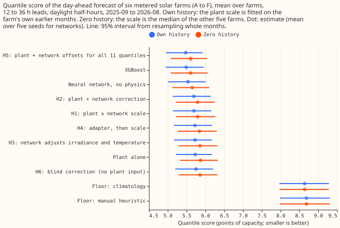
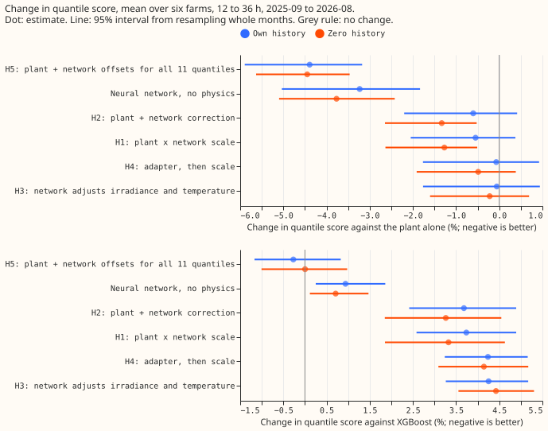
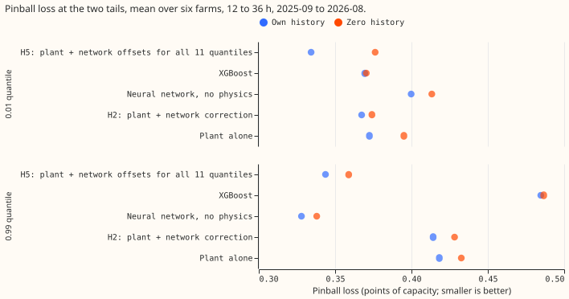
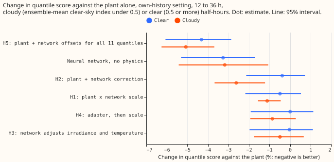

Does a physics plant with a small neural head forecast a metered solar farm better than a plant, XGBoost, or a neural network alone?
A small neural network on top of the solar-farm power model ties XGBoost and beats the power model alone when it outputs all 11 quantile offsets, though the power model was not given the lagged power and ensemble spread that the neural network saw. National Grid Electricity Distribution (NGED) meters the output of six solar farms in its trial area, which this page labels A to F. The "plant" is a solar-farm power model: south-facing panels at 35 degrees tilt, a heat loss of 0.4% per kelvin, and one fitted scale and ceiling per farm, driven by the mean of the 51 members of the European Centre for Medium-Range Weather Forecasts (ECMWF) ensemble forecast, as in experiment 224. We compared the plant alone, XGBoost (Chen and Guestrin, 2016), a neural network with no physics, and six hybrids, at 12 to 36 hours ahead on daylight half-hours in 2025-09 to 2026-08. The score is the quantile score: twice the mean pinball loss over 11 quantile levels, in points of capacity.
The prediction partly holds. The numbers in this paragraph are for the own-history setting: each farm's neural networks and plant scale are fitted on that farm's own months before 2025-09. The quantile score is 5.48 for H5 (the plant forecast plus 11 quantile offsets, which a neural network outputs as amounts added to the plant forecast), 5.49 for XGBoost, 5.54 for the neural network with no physics, 5.73 for the plant alone, and 8.64 and 8.69 for the climatology and manual-heuristic floors. H5 beats the plant by 4.4% (95% interval 3.2% to 5.9%) and ties XGBoost (-0.3%, -1.2% to +0.8%). The neural network with no physics does not beat XGBoost (+0.9%, +0.2% to +1.9%), as predicted. Against XGBoost, H5's pinball loss is 29% lower at the 0.99 quantile and 9.5% lower at the 0.01 quantile, which meets the 5% target at both tails. The 3% gain in the mean absolute error (MAE) of the median fails: H5's MAE of the median is only 0.5% lower than XGBoost's, with an interval from -1.5% to +0.6%. The hybrids' gain is larger on cloudy half-hours, as predicted (Figure 4).




The one-number hybrids barely help. H1 (the plant times a neural network's scale), H2 (the plant plus a neural network's correction), H3 (a neural network adjusts the irradiance and cell temperature before the plant), and H4 (H3 followed by H1) lower the score by 0.06% to 0.6% against the plant, and every interval includes zero. The stop rule (stop if no hybrid beats the plant by at least 2% at 2 of the first 3 farms) does not fire, because H5 beats the plant by at least 2% at all six farms; H1 to H4 would have fired the stop rule.
Zero history keeps the order. When the networks and XGBoost are fitted on the other five farms and the plant scale is the median of those farms' scales, XGBoost and H5 tie at 5.61, the neural network with no physics scores 5.65, and the plant alone 5.87. H5 beats the plant by 4.5% (3.5% to 5.6%). In this setting H1 and H2 do lower the score by 1.3%, with intervals below zero, The pooled plant scale is about 2.5% worse than a per-farm scale, and the neural networks may partly repair it.
Numbers
- Rows. 41,654 daylight half-hours (sun more than 5 degrees above the horizon) at 12 to 36 hour leads in 2025-09 to 2026-08, six farms, the rows of experiment 224. Each farm has equal weight, and the 95% intervals come from resampling the 12 scored months 20,000 times. The networks' scores are means over five seeds.
- Weather and forecast time. ECMWF ensemble, 00 UTC run, nearest 0.25 degree cell: mean and spread of the members' irradiance, and the mean temperature. All exist at forecast time. Lagged power is the farm's own observed power one day earlier (two days when the lead is over 24 hours), which exists at forecast time. The plant arm sees neither the lagged power nor the spread; the neural arms and XGBoost see both.
- Quantile score, own history (95% interval): H5 5.48 (4.95 to 5.92); XGBoost 5.49 (4.94 to 5.95); neural network 5.54 (5.00 to 6.01); H2 5.69; H1 5.70; H4 5.72; H3 5.72; plant 5.73 (5.21 to 6.17); H6 5.75; climatology 8.64; manual heuristic 8.69.
- Quantile score, zero history: XGBoost 5.61; H5 5.61; neural network 5.65; H2 5.79; H1 5.80; H4 5.84; H3 5.86; H6 5.86; plant 5.87.
- Contrasts, own history, quantile score: C1 H5 minus plant -4.39% (-5.90 to -3.18); C2 H5 minus XGBoost -0.27% (-1.17 to +0.83); neural network minus plant -3.23% (-5.03 to -1.83); neural network minus XGBoost +0.94% (+0.25 to +1.86). Cloudy half-hours (clear-sky index under 0.5): H5 minus plant -5.1%, H2 minus plant -2.6%; clear half-hours: H5 -4.3%.
- MAE of the median, own history (points of capacity): H5 9.85; XGBoost 9.90; plant 9.95; neural network 10.06. H5 minus XGBoost -0.49% (-1.53 to +0.64); the neural network is 1.7% worse than XGBoost (+0.8% to +2.9%).
- Pinball loss at the tails, own history (points of capacity): 0.01 quantile: H5 0.334, XGBoost 0.369, plant 0.373, neural network 0.400; 0.99 quantile: neural network 0.328, H5 0.344, plant 0.418, XGBoost 0.485. In zero history H5 is 1.6% worse than XGBoost at the 0.01 quantile (interval -3.3% to +5.3%), so the 5% target holds only in the own-history setting there.
- Per farm, H5 minus plant in quantile score: A -2.4%, B -5.4%, C -5.3%, D -5.4%, E -2.7%, F -5.3%. Leaving one farm out keeps H5 minus plant between -4.2% and -4.8%, and H5 minus XGBoost within 0.5% of zero.
- Seeds. The standard deviation of the score across five seeds is 0.007 for H5 and 0.021 for the neural network.
- Tail calibration. Coverage at the 0.99 level is 99.35% for XGBoost (over-covered) and 98.0% to 98.5% for the other arms.
- Curtailment value. Not scored, because experiment 224 found that its pilot set of grid nodes cannot rank forecasts by curtailment value.
- Departures from the brief. The experiment's brief (the written specification it was set up from) asks for weekly refits, day of year as an input, and a violation count for monotonicity in irradiance. We ran one fit on the tuning months, left day of year out (it lets a network memorise the date), and did not count violations. Outputs are non-negative, at most the farm's ceiling, and non-crossing by construction. The interpretability plots for H1 and H3 were not drawn. Part (B), which adds the Met Office's UKV weather-model variables as inputs, was not run.
Checks
- Median minus mean forecast (points of capacity, own history): H5 +0.52, plant +0.89, neural network +0.18, XGBoost -0.51. The mean forecast is the weighted mean of the 11 quantiles.
- Mean-forecast error beside each quantile contrast. The MAE of the mean forecast is 9.93 for H5, 10.19 for the plant, 10.17 for the neural network, and 10.17 for XGBoost. H5's gain against the plant in the quantile score (4.4%) is matched by a 2.6% gain in the MAE of the mean forecast, so the gain is both in location and in width.
- Triggers fired. Trigger 3 (a quantile contrast and the median MAE disagree) fires for the neural network: its quantile score is 3.2% better than the plant's, while its MAE of the median is 1.1% worse. The neural network is better at the 0.99 quantile (-21.6%) and worse at the 0.01 quantile (+7.3%), so the quantile score hides opposite tail effects. Trigger 4 (a nested arm worse than the arm it contains) fires weakly: H4 scores 0.5% worse than H1, within the seed spread. The blind control H6 scores 1% worse than H2, which suggests the plant carries only a small part of the gain. Trigger 7 (a later part builds on these results) fires, because part (B) builds on these results. No Opus audit was run, because the ML manager ruled one out to save quota. A Sonnet reviewer read the code for leakage and found no scored-year row in any fit: the plant scale, ceiling, offsets, normalisation, and epoch choice, and the XGBoost fit, use rows before 2025-09-01 only, and the zero-history fits never see the scored farm's training rows.
- Caveat: zero history still reads recent power. In the zero-history setting the scored farm's own power from one or two days earlier is an input (lagged power), so "zero history" means no training history, not no live observations.
- Caveat: lead of exactly 24 hours. A lead of exactly 24 hours uses the observation at the forecast time, which assumes no telemetry delay.
- Caveat: the plant arm lacks two inputs. The plant arm has no lagged power and no spread, so part of H5's gain over the plant may come from those inputs and not from the neural network's capacity. A follow-up could give the plant the same inputs.
- Caveat: XGBoost is not handicapped. XGBoost sees the same 12 raw columns as the neural network (including lagged power and spread) plus the plant forecast.
- Caveat: one fit, 12 months. The scored year uses one fit on the tuning months, with no refit, and has 12 months, so the intervals are wide. The floors are re-implemented from their definitions.
What the next experiment should answer
Whether the 4.4% gain of H5 survives when the plant arm is given the same lagged power and ensemble spread as inputs, and whether UKV variables (part B) improve H5 and the neural network at 12 to 36 hours.
Plan
- Weather and forecast time. ECMWF ensemble (51 members), 00 UTC run, at the nearest 0.25 degree cell, 12 to 36 hours ahead, as in experiment 224: ensemble-mean irradiance, beam, diffuse, and temperature, and the members' standard deviation of irradiance. All exist at forecast time. Lagged power is the farm's own observed power one day earlier (two days earlier when the lead is over 24 hours), which exists at forecast time. This is part (A); part (B) adds UKV variables.
- Plant. The fleet-shape plant of experiment 224 (tilt 35 degrees, south, 0.4% loss per kelvin of cell temperature), with a scale and a ceiling per farm. Its quantiles are the plant forecast plus 11 residual quantiles of the tuning months in four bins of the forecast ("the offsets").
- Arms. References: the two floors and the plant alone and XGBoost. Pure neural network: a multilayer perceptron on the raw weather, sun geometry, lead, and lagged power. H1: the plant times a bounded scale factor from a network. H2: the plant plus an additive correction from a network. H3: a network adjusts the irradiance and temperature, which then go through the unchanged plant (trained end to end). H4: H3 followed by H1. H5: the plant plus a network that outputs all 11 quantile offsets. H6: H2 without the plant forecast as input (the blind control).
- Settings. (i) Own history: each farm's network and plant scale are fitted on its own tuning months (before 2025-09). (ii) Zero history, leave-one-farm-out: the networks and XGBoost are fitted on the other five farms' tuning months, and the plant scale and ceiling are the median over those five farms, so the scored farm contributes no data. The two are reported separately.
- Inputs left out on purpose. Day of year is not an input, because a calendar column lets a network memorise the date; solar elevation and azimuth carry the season. The hybrids see no farm label, so setting (ii) is possible.
- Schedule. One fit per arm, seed, and setting on the tuning months; no refit in the scored year (the screening schedule; the weekly refits the brief asks for the headline are not run). Five seeds per neural arm; the last two tuning months select the training epoch. Pinball loss at the 11 levels is the training loss; outputs are non-negative and capped at the farm's ceiling by construction, and the quantiles are non-crossing by construction.
Data-processing note
Experiment 268 found crossing quantiles in 26,344 of its 77,897 generator-forecast rows (34%), but all of them belong to three generators that are not solar farms, so none is on this page. Experiment 273 counted 0 crossing rows in every arm here, because the fit scripts sorted the 11 quantiles before writing them, so sorting does not change the scores on this page.